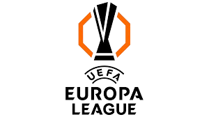
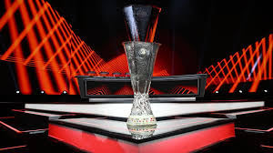
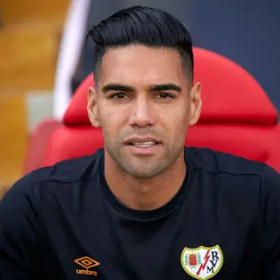
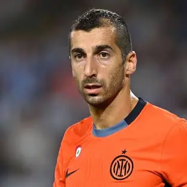
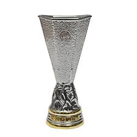

UEFA Europa League este a doua cea mai importantă competiție inter-cluburi din Europa, după Champions League. Fondată în 1971 (sub numele de UEFA Cup), competiția aduce împreună echipele care se clasează pe poziții inferioare în campionatele naționale sau care sunt eliminate din preliminariile Champions League.
Competiția începe cu trei runde preliminare și un play-off, urmate de faza grupelor (32 de echipe împărțite în 8 grupe). Primele două echipe din fiecare grupă avansează în faza eliminatorie (optimile, sferturile, semifinalele și finala), unde li se alătură echipele care au terminat pe locul 3 în grupele Champions League.

Printre cei mai remarcabili jucători care au excelat în Europa League se numără:


Europa League oferă nu doar un trofeu prestigios, dar și o calificare directă în Champions League pentru câștigător. De asemenea, este o platformă pentru echipele din ligi mai mici să se afirme pe plan european.

| An | Câștigător | Finalist | Scor |
|---|---|---|---|
| 2023 | Sevilla | Roma | 1-1 (4-1 la pen.) |
| 2022 | Eintracht Frankfurt | Rangers | 1-1 (5-4 la pen.) |
| 2021 | Villarreal | Manchester United | 1-1 (11-10 la pen.) |
| 2020 | Sevilla | Inter Milano | 3-2 |